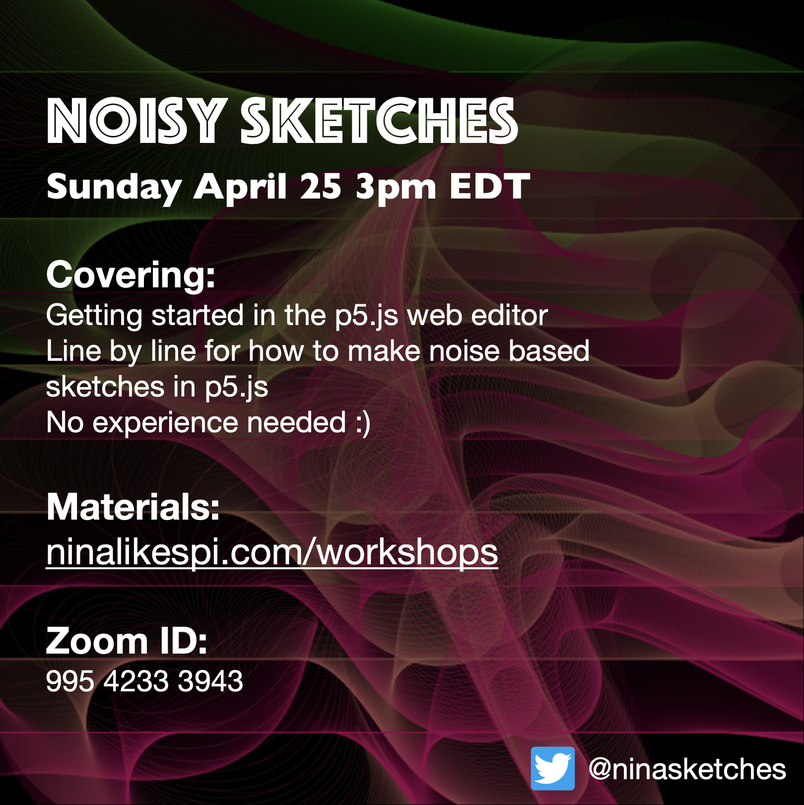

April 2021 Noisy Sketches Workshop

Thanks for coming by! We are going to be covering how to make noisy sketches like the ones below. Unfortunately this workshop won't be recorded, but video tutorials are incoming in the future!
Follow on Twitter @ninasketches to see sketches like these daily. You can also DM for requests, etc. Some sketches available for purchase on clothihng, stickers, homegoods, and more here.
I have written a bit about the process behind these sketches in this Medium article.